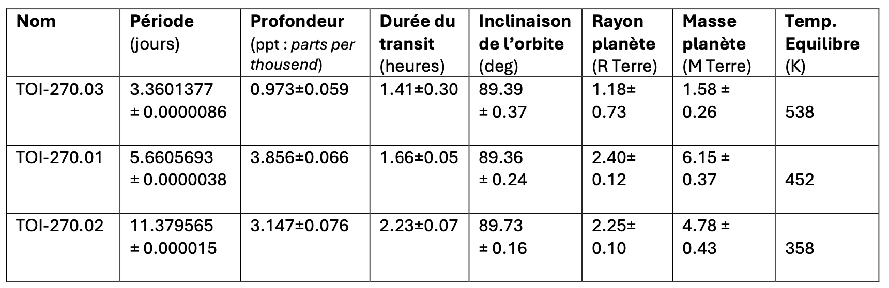
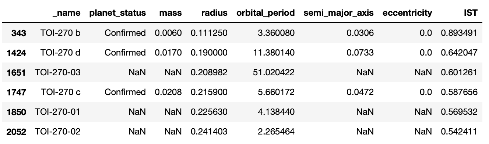

import numpy as np
import pandas as pd
import matplotlib.pyplot as plt
from matplotlib.widgets import Cursor
Import BDD
La base de données doit être téléchargée ici : exoplanetes.db
On prépare un dataframe avec les données d’exoplanètes issues d’une BDD (TOUTES les exoplanètes):
# Toutes exoplanetes / BDDimportsqlite3try:conn=sqlite3.connect('exoplanetes.db')cur=conn.cursor()print("Base de données crée et correctement connectée à SQLite")sql="SELECT sqlite_version();"cur.execute(sql)res=cur.fetchall()print("La version de SQLite est: ",res)exceptsqlite3.Erroraserror:print("Erreur lors de la connexion à SQLite",error)sql="PRAGMA table_info(planetes_es);"cur.execute(sql)res=cur.fetchall()L=[ligne[1]forligneinres]sql="select * from planetes_es"cur.execute(sql)res=cur.fetchall()dataset=pd.DataFrame(res,columns=L)dataset
Créer un dataframe avec les exoplanètes du systeme TOI
Préparer un fichier csv ou txt avec tous les résultats de vos recherches sur les planètes observées. Ou
Telecharger
un exemple de fichier. Nommez le donnees_transit_planetes.txt pour la suite.
Les données du fichier sont importées avec la fonction read_csv:
Le paramètre sep doit correspondre au caractère de séparation: \t pour un espace tabulation, sinon , ou ; selon le logiciel tableur utilisé.
header est un autre paramètre optionel, pour préciser le numero de ligne qui contient les en-tête de colonne.
Les données des masses ont été ajoutées à partir du document suivant, converties en M_J:

données des masses pour les planetes de TOI
Rappel: les masses des exoplanetes sont souvent exprimées en M_J, (en masses de Jupiter). Pour exprimer directement ces masses en M_J, cela va necessiter de realiser une conversion:
$$mass = m \times M_{Terre} / M_J$$
m: masse de l’exoplanete TOI_x dans le tableau precedent, exprimée en masses Terre.
# creation dataframe a partir du fichierG=6.67e-11R_Jup=71e6# mM_Jup=6.9911e7# kgM_sol=1.9885e30# kgR_sol=696.342e6# mdf['R_star']=df['star_radius']*R_sol# mdf['M_star']=df['star_mass']*M_sol# kgdf['tau']=(df['fin_transit']-df['debut_transit'])*24*3600# sdf['delta']=1-df['lum_min']# sans dimdf['R_p']=np.sqrt(df['delta'])*df['R_star']# mdf['radius']=df['R_p']/R_Jup# en R_J# vitesse planete : V_p = 2*R_star/taudf['V_p']=2*df['R_star']/df['tau']# rayon orbital : r = G*M_star/V_p**2df['r_orb']=G*df['M_star']/df['V_p']**2# periode revolution: T = 2*np.pi*r/V_pdf['T']=2*np.pi*df['r_orb']/df['V_p']df['orbital_period']=df['T']/(24*3600)# en jours de 24hdf=df[['_name','radius','orbital_period','star_name','star_mass','star_radius']]df
Ajout d’une colonne IST, indice de similarité avec la Terre: voir methode de calcul ici
M_earth=float(dataset[dataset['_name']=='earth']['mass'])R_earth=float(dataset[dataset['_name']=='earth']['radius'])# definir un coefficient adimentionné pour l'IST# et calculer pour toutes les planetes du tableaudataset['IST']=1-abs(dataset['radius']-R_earth)/(dataset['radius']+R_earth)# trierdataset.sort_values('IST',ascending=False,inplace=True,ignore_index=True)dataset=dataset[['_name','planet_status','mass','radius','orbital_period','semi_major_axis','eccentricity','IST']]dataset[dataset['IST']>0]
L’IST a été calculé sur la seule valeur du rayon de la planete
liste ordonnée par IST decroissant
Le tri se fait avec l’instruction dataset.sort_values('IST', ascending=False, inplace=True). On choisit de numéroter les lignes de dataset après le tri.
Puis rechercher dans cette table nos exoplanètes de TOI:
Les extensions a-b-c sont celles des exoplanetes de la base de données. Celles avec 1-2-3 sont celles de notre étude. Ces 2 séries d’information se referent aux 3 mêmes exoplanètes.

Place des TOI dans la table
On peut bien sûr ajouter d’autres caractéristiques des planetes pour le calcul de l’IST et les comparer à la Terre.
Sauvegardez votre dataframe dans un fichier .csv
Vous pourrez alors poursuivre vos traitements, sans avoir à executer tout le notebook.